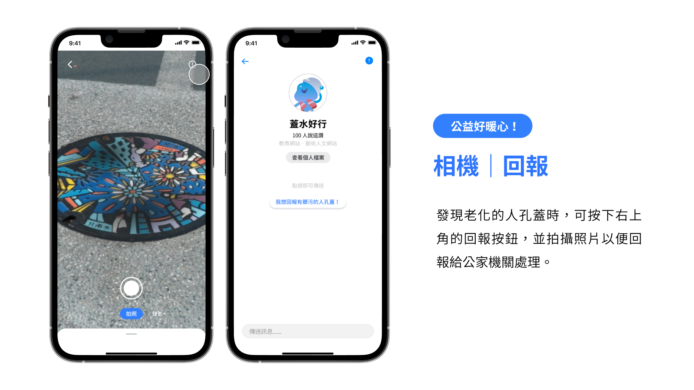
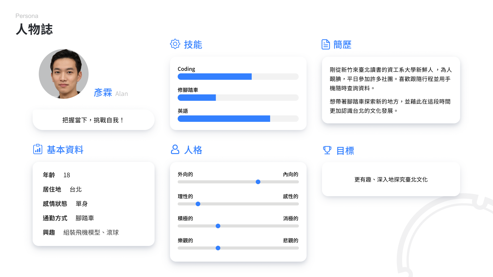
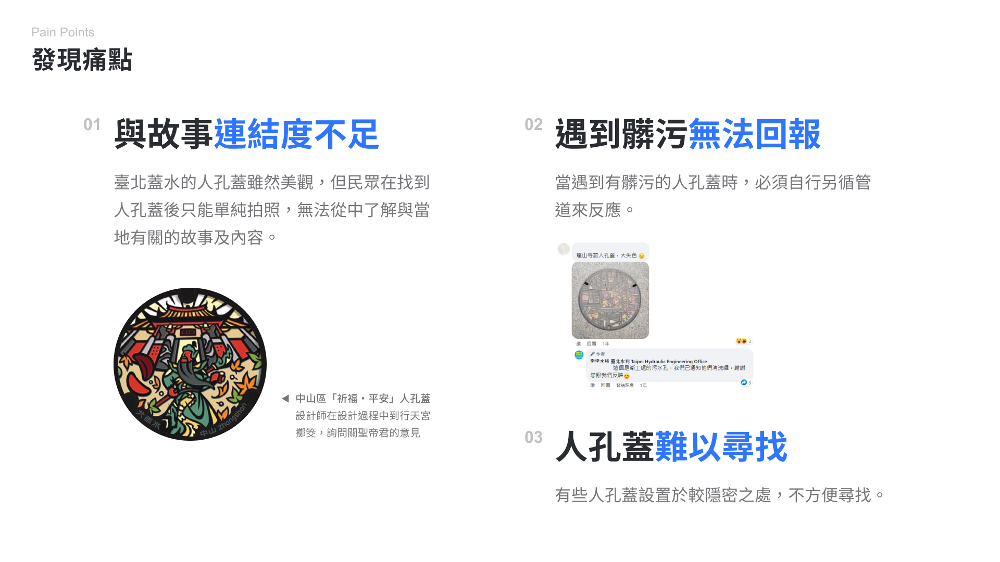
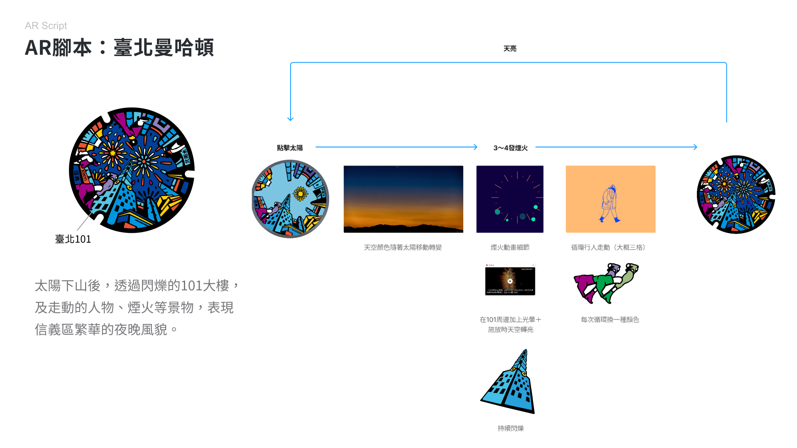
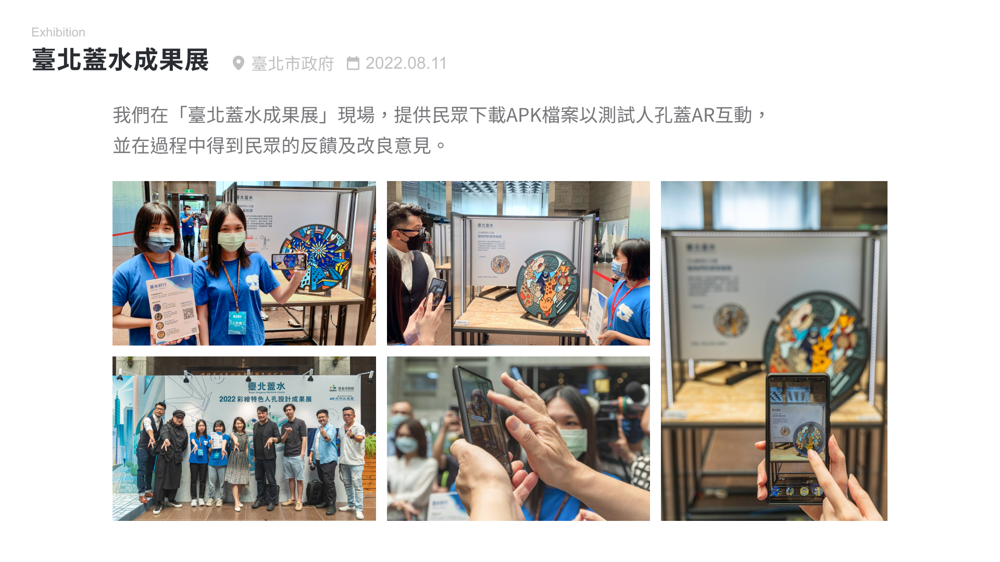
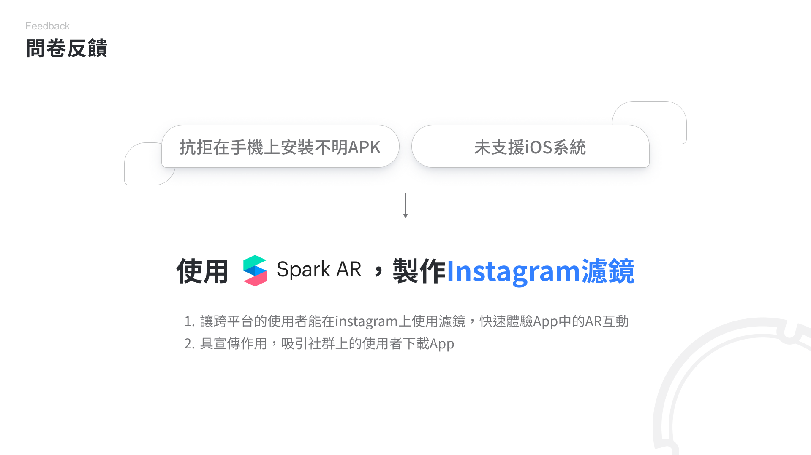
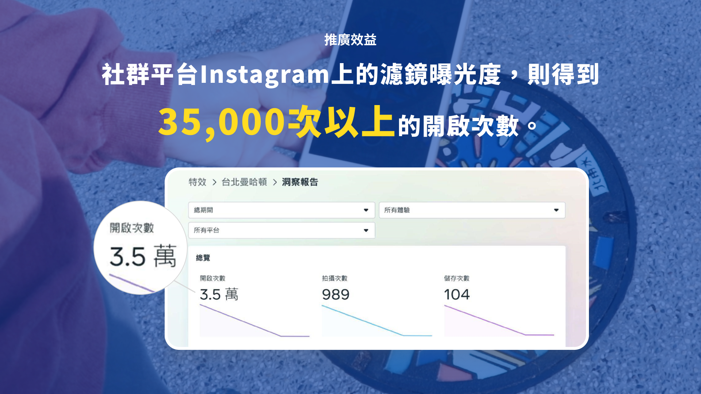

作品介紹
「臺北蓋水」為臺北市水利處的專案，藉由人孔蓋外觀大改造，翻轉大眾對於人孔蓋總是髒髒黑黑，甚至是都市地雷之負面印象。「蓋水好行」結合臺北蓋水，介紹各行政區域的故事、景點，讓民眾透過人孔蓋認識當地的文化、特色，將它們串聯起來後，便會認識這座城市。透過人孔蓋上的AR互動，以及豐富的收集要素，讓「遊臺北」變成一件簡單且有趣的事。
負責項目

｜共同負責項目
企劃發想、使用者研究
｜個人負責項目
App UI設計、AR互動內2D動畫製作、影片剪輯、海報及周邊製作
設計成果
蓋水好行App的完整架構中，主要的頁面為：地圖、AR拍照及圖鑑。
整體風格主要採用簡單直觀的UI設計，讓使用者能更方便聚焦各個資訊，並快速且輕鬆學會如何使用。
1. 首頁：地圖
首頁設置了行政區按鈕，使用者能快速找到想探索的人孔蓋，點擊「出發」便會開啟GoogleMap，使用者能依照自己習慣的交通方式尋找人孔蓋。
2. 相機：AR互動
目前蓋水好行已經製作了8個與人孔蓋連接的AR互動，區域包括：大同區、信義區、大安區、松山區及文山區，只要在路上找到人孔蓋，便能馬上開起相機遊玩。AR呈現方式橫跨2D、3D等表現手法，互動形式也各不相同，除了貼合臺北蓋水設計師們的設計理念，也創造豐富的可玩性。
免下載體驗：Instagram濾鏡

3. 相機：回報
在走訪特色人孔蓋時，使用者可一邊蒐集成就，一邊注意水溝蓋的老化、汙損情況，並且即時進行回報，為城市環境的維護盡一份心力。
4. 圖鑑：蒐集
完成AR體驗後，便可解鎖圖鑑中的人孔蓋，鼓勵使用者透過蒐集系統，在臺北市街頭發現更多有趣的事物。
5. 圖鑑：成就
成就系統中設計了各種水寶成就徽章，例如：信義區探索家、拍照高手及分享派對咖等徽章，鼓勵使用者走訪多個景點來認識、蒐集多個人孔蓋，以及使用App內的各項功能。

6. 首頁：小知識
使用App的同時，水寶會向使用者介紹與人孔蓋及當地區域的故事，增強使用者對於人文的認識和理解。
設計亮點

使用者研究
在專案初期為了能夠更加貼近民眾的想法，我們實際到了臺北市大同區考察已裝設的人孔蓋，也記錄下途中的發現。並且設定人物誌，以此人物的角度來找出臺北蓋水專案在實施上的痛點。
其中最需解決的痛點是：臺北蓋水的人孔蓋雖然美觀，但民眾在找到人孔蓋後只能拍照，並不能從中了解與當地有關的內容。於是我們希望能將當地的故事、景點與AR互動技術結合，讓民眾在探訪人孔蓋的過程中以有趣的方式更加認識臺北。
使用AR互動的形式，可帶出特色人孔蓋上設計元素的歷史脈絡，並以有趣、新穎的方式推廣。這樣的設計不僅能夠引起興趣和好奇心，也能夠增強對當地文化的理解和感受。
確定要以App的形式來整合AR互動及介紹等內容後，我繪製Wireframe來規劃App的介面雛形，方便組員之間進行討論。
App介面主頁以地圖呈現，使用者便能夠及時找到在自己附近的人孔蓋。
在這個階段我們也開始發想各個人孔蓋的AR互動腳本，並實際製作及測試。
由於我們希望能透過遊戲化的手法為App更添趣味性，所以設計了吉祥物——水寶，讓水寶能與使用者互動，例如：說故事、詢問小知識等等，也鼓勵使用者達成更多成就。
在開發的途中，蓋水好行受邀參加了在臺北市政府舉辦的「臺北蓋水成果展」。
過程中我們也收集了多份問卷，其中最多的回饋為：「希望能提供ios系統來遊玩」，但由於種種的開發限制，所以我們決定將App中的AR互動移植到Instagram濾鏡，讓各平台的使用者都可以輕鬆體驗AR互動，也讓不願意下載App的使用者可以先試玩內容。
經歷成果展後，我們針對使用者的回饋對AR互動進行性能評估和改善。透過改進使用者流程，進一步提升民眾使用「蓋水好行」的意願。
成果展示

推廣效益
我們從臺北蓋水成果展、校內展、新一代設計展及放視大賞對蓋水好行進行實測及驗證。經過使用者實際操作，我們的App在使用者好感上達到了69.4%。使用者可以透過蓋水好行，更加有趣地欣賞不同的文化和歷史遺產，從而吸引更多的遊客，促進文化交流，並且能夠提升遊客的體驗過程。
同時，也使用社群平台讓AR互動濾鏡在短時間內傳播到大量的社群用戶手中，提高知名度和曝光率。以下為「臺北曼哈頓」濾鏡截至2023年3月在Instagram上的曝光度，達到了35,000次的開啟次數，通過社群平台吸引了更多的潛在客戶。
隨著國內外文化旅遊產業的不斷發展，AR文化導覽已成為一個重要的競爭優勢。提供AR導覽服務可以吸引更多的遊客，提升在地觀光體驗、增加旅遊消費及推動旅遊產業的發展。同時提高文化遺產的價值，增強其影響力和知名度，吸引更多投資及贊助，進一步推動文化產業的發展。


{kind=link}
{kind=link}
{kind=link}
{kind=link}
{kind=link}
{kind=link}
{kind=link}
{kind=link}
{kind=link}
{kind=link}
{kind=link}
{kind=link}
{kind=link}
{kind=link}
{kind=link}
{kind=link}
{kind=link}
{kind=link}
{kind=link}
{kind=link}